2022 Higher Mathematics - Paper 2 marking instructions
Source: Scottish Qualifications Authority (SQA) / Qualifications Scotland. This is a StemInteract HTML companion, not an official HTML edition. Selectable text is supplied alongside original page images. Use the images or original PDF for equations, powers, fractions, vector notation, tables and diagrams; text extraction cannot fully preserve mathematical layout.
Jump to a question
PDF page 1
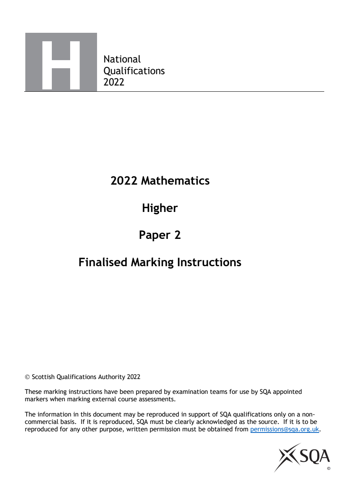
Selectable page text
National
Qualifications
2022
2022 Mathematics
Higher
Paper 2
Finalised Marking Instructions
© Scottish Qualifications Authority 2022
These marking instructions have been prepared by examination teams for use by SQA appointed
markers when marking external course assessments.
The information in this document may be reproduced in support of SQA qualifications only on a non-
commercial basis. If it is reproduced, SQA must be clearly acknowledged as the source. If it is to be
reproduced for any other purpose, written permission must be obtained from permissions@sqa.org.uk.PDF page 2
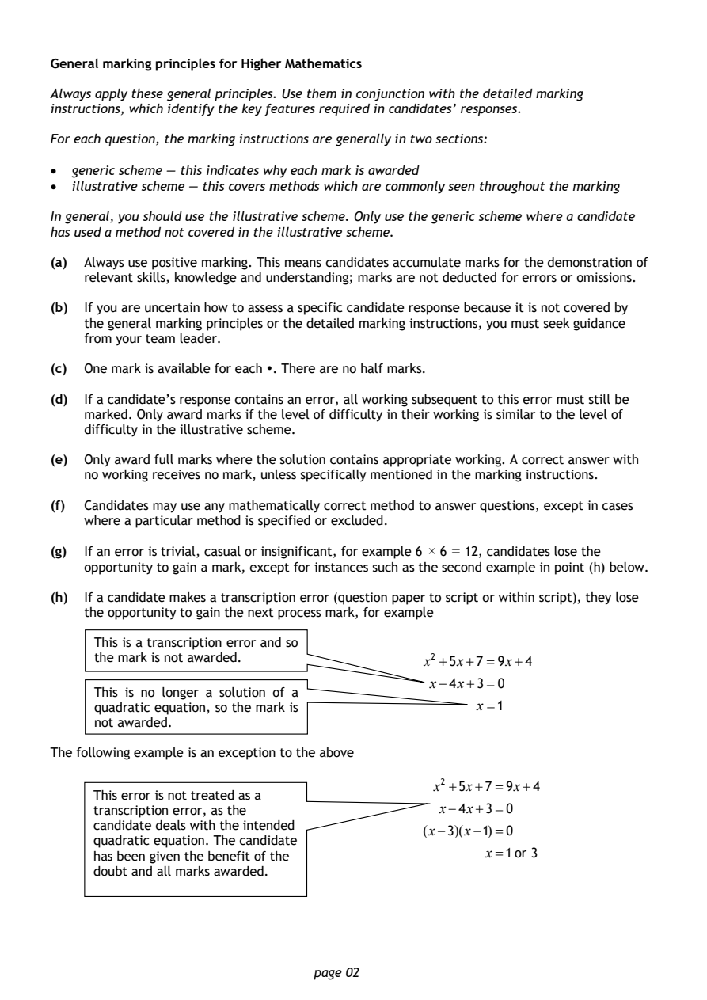
Selectable page text
General marking principles for Higher Mathematics
Always apply these general principles. Use them in conjunction with the detailed marking
instructions, which identify the key features required in candidates’ responses.
For each question, the marking instructions are generally in two sections:
• generic scheme — this indicates why each mark is awarded
• illustrative scheme — this covers methods which are commonly seen throughout the marking
In general, you should use the illustrative scheme. Only use the generic scheme where a candidate
has used a method not covered in the illustrative scheme.
(a) Always use positive marking. This means candidates accumulate marks for the demonstration of
relevant skills, knowledge and understanding; marks are not deducted for errors or omissions.
(b) If you are uncertain how to assess a specific candidate response because it is not covered by
the general marking principles or the detailed marking instructions, you must seek guidance
from your team leader.
(c) One mark is available for each . There are no half marks.
(d) If a candidate’s response contains an error, all working subsequent to this error must still be
marked. Only award marks if the level of difficulty in their working is similar to the level of
difficulty in the illustrative scheme.
(e) Only award full marks where the solution contains appropriate working. A correct answer with
no working receives no mark, unless specifically mentioned in the marking instructions.
(f) Candidates may use any mathematically correct method to answer questions, except in cases
where a particular method is specified or excluded.
(g) If an error is trivial, casual or insignificant, for example 6 × 6 = 12, candidates lose the
opportunity to gain a mark, except for instances such as the second example in point (h) below.
(h) If a candidate makes a transcription error (question paper to script or within script), they lose
the opportunity to gain the next process mark, for example
This is a transcription error and so
the mark is not awarded. x² +5x+7 =9x+4
x−4x+3=0
This is no longer a solution of a
quadratic equation, so the mark is x=1
not awarded.
The following example is an exception to the above
x² +5x+7 =9x+4
This error is not treated as a
transcription error, as the x−4x+3=0
candidate deals with the intended
(x−3)(x−1)=0
quadratic equation. The candidate
has been given the benefit of the x=1 or 3
doubt and all marks awarded.
page 02PDF page 3
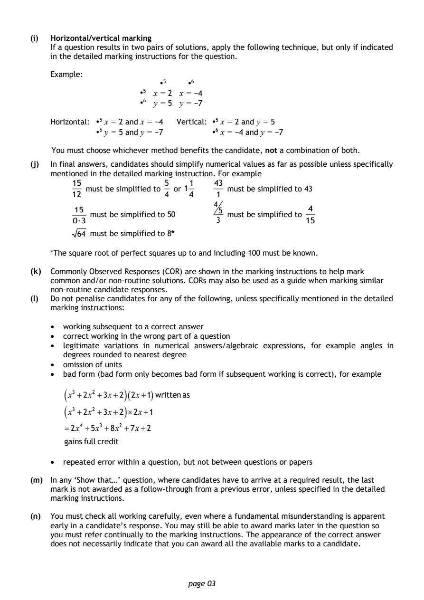
Selectable page text
(i) Horizontal/vertical marking
If a question results in two pairs of solutions, apply the following technique, but only if indicated
in the detailed marking instructions for the question.
Example:
5 6
5 x = 2 x = −4
6 y = 5 y = −7
Horizontal: 5 x = 2 and x = −4 Vertical: ⁵ x = 2 and y = 5
6 y = 5 and y = −7 6 x = −4 and y = −7
You must choose whichever method benefits the candidate, not a combination of both.
(j) In final answers, candidates should simplify numerical values as far as possible unless specifically
mentioned in the detailed marking instruction. For example
15 5 1 43
must be simplified to or 1 must be simplified to 43
12 4 4 1
4
15 5 4
must be simplified to 50 must be simplified to
0·3 3 15
64 must be simplified to 8*
*The square root of perfect squares up to and including 100 must be known.
(k) Commonly Observed Responses (COR) are shown in the marking instructions to help mark
common and/or non-routine solutions. CORs may also be used as a guide when marking similar
non-routine candidate responses.
(l) Do not penalise candidates for any of the following, unless specifically mentioned in the detailed
marking instructions:
• working subsequent to a correct answer
• correct working in the wrong part of a question
• legitimate variations in numerical answers/algebraic expressions, for example angles in
degrees rounded to nearest degree
• omission of units
• bad form (bad form only becomes bad form if subsequent working is correct), for example
(
x³ +2x² +3x+2
)(2x+1)
written as
( )
x³ +2x² +3x+2 ×2x+1
=2x⁴ +5x³ +8x² +7x+2
gains full credit
• repeated error within a question, but not between questions or papers
(m) In any ‘Show that…’ question, where candidates have to arrive at a required result, the last
mark is not awarded as a follow-through from a previous error, unless specified in the detailed
marking instructions.
(n) You must check all working carefully, even where a fundamental misunderstanding is apparent
early in a candidate’s response. You may still be able to award marks later in the question so
you must refer continually to the marking instructions. The appearance of the correct answer
does not necessarily indicate that you can award all the available marks to a candidate.
page 03PDF page 4
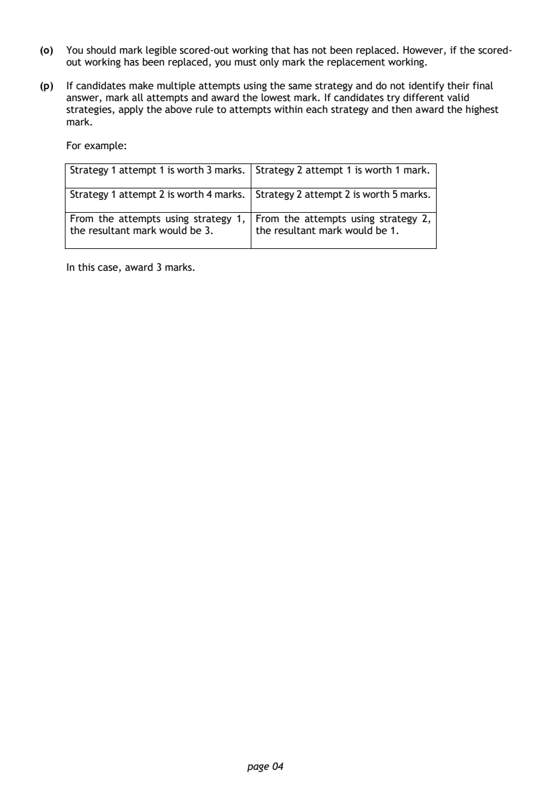
Selectable page text
(o) You should mark legible scored-out working that has not been replaced. However, if the scored-
out working has been replaced, you must only mark the replacement working.
(p) If candidates make multiple attempts using the same strategy and do not identify their final
answer, mark all attempts and award the lowest mark. If candidates try different valid
strategies, apply the above rule to attempts within each strategy and then award the highest
mark.
For example:
Strategy 1 attempt 1 is worth 3 marks. Strategy 2 attempt 1 is worth 1 mark.
Strategy 1 attempt 2 is worth 4 marks. Strategy 2 attempt 2 is worth 5 marks.
From the attempts using strategy 1, From the attempts using strategy 2,
the resultant mark would be 3. the resultant mark would be 1.
In this case, award 3 marks.
page 04PDF page 5
Paper 2, Question 1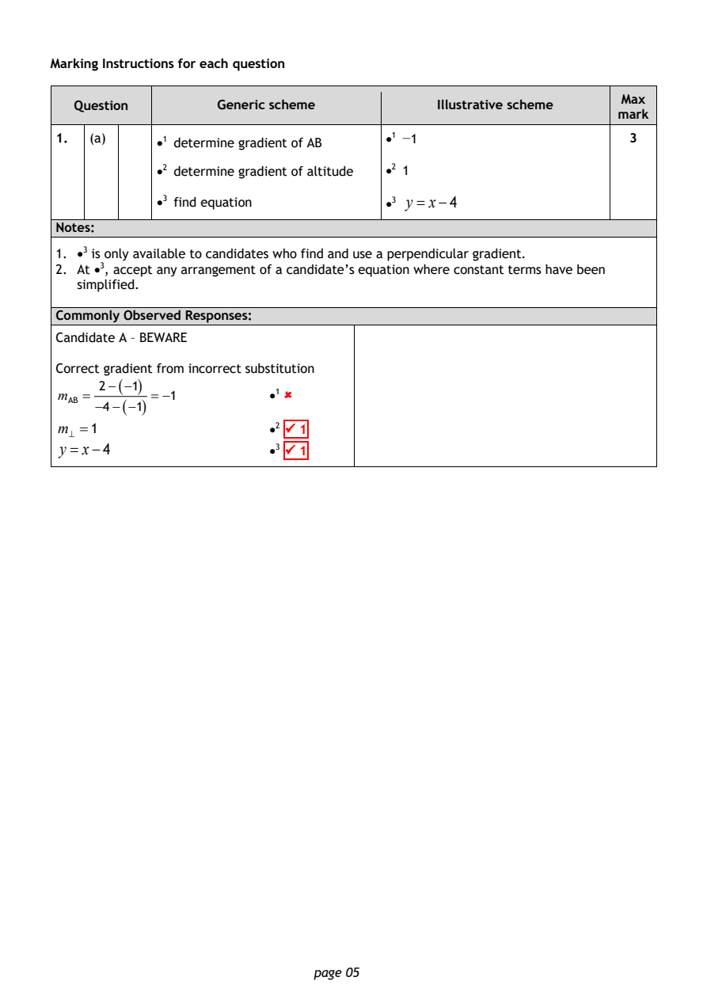
Selectable page text
Marking Instructions for each question
Max
Question Generic scheme Illustrative scheme
mark
1. (a) •1 determine gradient of AB •1 −1 3
•2 determine gradient of altitude •2 1
•3 find equation •3 y = x−4
Notes:
1. •³ is only available to candidates who find and use a perpendicular gradient.
2. At •³, accept any arrangement of a candidate’s equation where constant terms have been
simplified.
Commonly Observed Responses:
Candidate A – BEWARE
Correct gradient from incorrect substitution
2−(−1)
m_{A}_{B} = =−1 •1
−4−(−1)
m_{⊥} =1 •2 ✓ 1
y = x−4 •3 ✓ 1
page 05PDF page 6
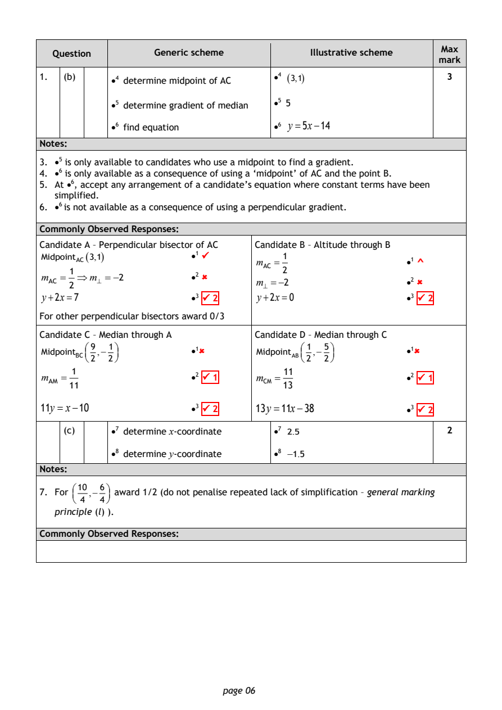
Selectable page text
Max
Question Generic scheme Illustrative scheme
mark
1. (b)
•4 determine midpoint of AC
•4 (3,1) 3
•5 determine gradient of median •5 5
•6 find equation •6 y =5x−14
Notes:
3. •⁵ is only available to candidates who use a midpoint to find a gradient.
4. •⁶ is only available as a consequence of using a ‘midpoint’ of AC and the point B.
5. At •⁶, accept any arrangement of a candidate’s equation where constant terms have been
simplified.
6. •⁶ is not available as a consequence of using a perpendicular gradient.
Commonly Observed Responses:
Candidate A – Perpendicular bisector of AC Candidate B – Altitude through B
Midpoint_{A}_{C}(3,1) •1 ✓ 1
m_{A}_{C} = •1 ^
1 2
m_{A}_{C} = ⇒m_{⊥} =−2 •2
m_{⊥} =−2 •2
2
y+2x=7 •3 ✓ 2 y+2x=0 •3 ✓ 2
For other perpendicular bisectors award 0/3
Candidate C – Median through A Candidate D – Median through C
Midpoint_{B}_{C} 9 ,− 1 •1 Midpoint_{A}_{B} 1 ,− 5 •1
2 2 2 2
1 11
m_{A}_{M} = •2 ✓ 1 m_{C}_{M} = •2 ✓ 1
11 13
11y = x−10 •3 ✓ 2 13y =11x−38 •3 ✓ 2
(c) •7 determine x-coordinate •7 2.5 2
•8 determine y-coordinate •8 −1.5
Notes:
10 6
7. For ,− award 1/2 (do not penalise repeated lack of simplification – general marking
4 4
principle (l) ).
Commonly Observed Responses:
page 06PDF page 7
Paper 2, Question 2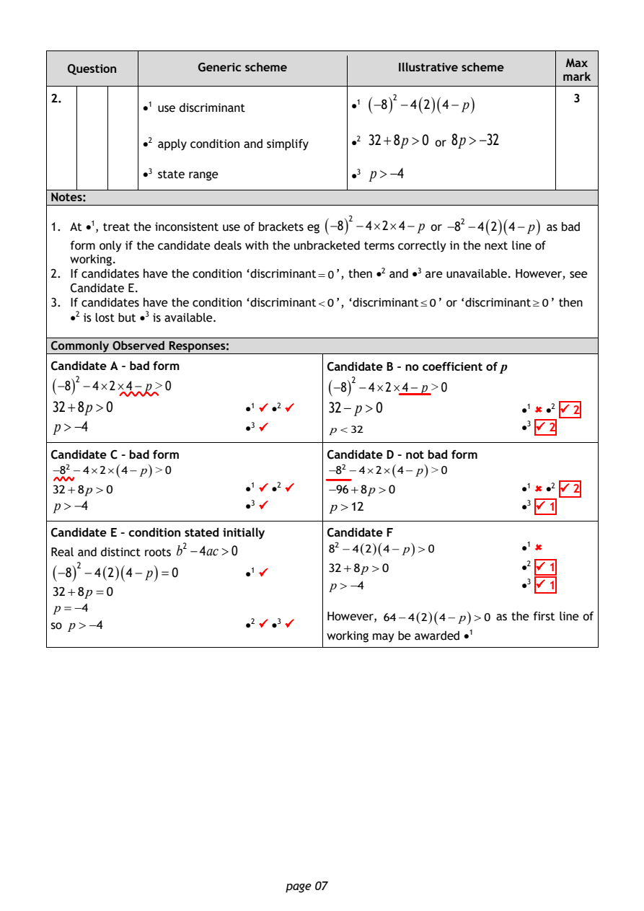
Selectable page text
Max
Question Generic scheme Illustrative scheme
mark
2.
•1 use discriminant •1
(−8)² −4(2)(4− p) 3
•2 apply condition and simplify •2 32+8p>0 or 8p>−32
•3 state range •3 p>−4
Notes:
1. At •¹, treat the inconsistent use of brackets eg (−8)² −4×2×4− p or −8² −4(2)(4− p) as bad
form only if the candidate deals with the unbracketed terms correctly in the next line of
working.
2. If candidates have the condition ‘discriminant=0’, then •² and •³ are unavailable. However, see
Candidate E.
3. If candidates have the condition ‘discriminant<0’, ‘discriminant≤0’ or ‘discriminant≥0’ then
•2 is lost but •³ is available.
Commonly Observed Responses:
Candidate A – bad form Candidate B – no coefficient of p
(−8)² −4×2×4− p>0 (−8)² −4×2×4− p>0
32+8p>0 •1 ✓ •2 ✓ 32− p>0 •1 •2 ✓ 2
p>−4 •3 ✓ p<32 •3 ✓ 2
Candidate C – bad form Candidate D – not bad form
−8² −4×2×(4− p)>0 −8² −4×2×(4− p)>0
32+8p>0 •1 ✓ •2 ✓ −96+8p>0 •1 •2 ✓ 2
p>−4 •3 ✓ p>12 •3 ✓ 1
Candidate E – condition stated initially Candidate F
Real and distinct roots b² −4ac>0 8² −4(2)(4− p)>0 •1
(−8)² −4(2)(4− p)=0
•1 ✓
32+8p>0 •2 ✓ 1
p>−4 •3 ✓ 1
32+8p =0
p =−4
However, 64−4(2)(4− p)>0 as the first line of
so p>−4 •2 ✓ •3 ✓
working may be awarded •¹
page 07PDF page 8
Paper 2, Question 3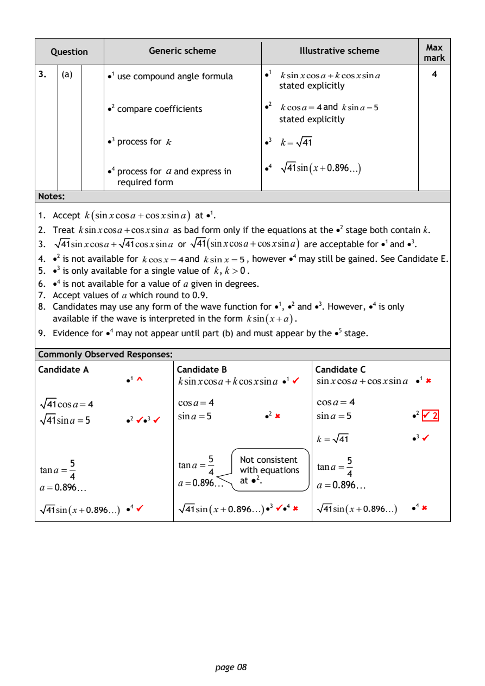
Selectable page text
Max
Question Generic scheme Illustrative scheme
mark
3. (a) •1 use compound angle formula •1 ksinxcosa+kcosxsina 4
stated explicitly
•2 compare coefficients •2 kcosa= 4and ksina=5
stated explicitly
•3 process for k •3 k= 41
•4 process for aand express in •4 41sin(x+0.896 )
required form
Notes:
1. Accept k(sinxcosa+cosxsina) at •¹.
2. Treat ksinxcosa+cosxsina as bad form only if the equations at the •² stage both contain k.
3. 41sinxcosa+ 41cosxsina or
41(sinxcosa+cosxsina)
are acceptable for •¹ and •³.
4. •² is not available for kcosx=4and ksinx =5, however •⁴ may still be gained. See Candidate E.
5. •³ is only available for a single value of k,k >0.
6. •⁴ is not available for a value of a given in degrees.
7. Accept values of a which round to 0.9.
8. Candidates may use any form of the wave function for •¹, •2 and •³. However, •⁴ is only
available if the wave is interpreted in the form ksin(x+a).
9. Evidence for •⁴ may not appear until part (b) and must appear by the •⁵ stage.
Commonly Observed Responses:
Candidate A Candidate B Candidate C
•1 ^ ksinxcosa+kcosxsina •¹ ✓ sinxcosa+cosxsina •¹
41cosa=4 cosa= 4 cosa= 4
sina =5 •2 sina =5 •2 ✓ 2
41sina =5 •2 ✓•3 ✓
k = 41 •3 ✓
5 Not consistent 5
tana =
5 tana =
4 with equations
tana =
4
4
a=0.896
a=0.896 at ●². a =0.896
41sin(x+0.896 ) •4 ✓ 41sin(x+0.896 )•3 ✓•4 41sin(x+0.896 ) •4
page 08PDF page 9
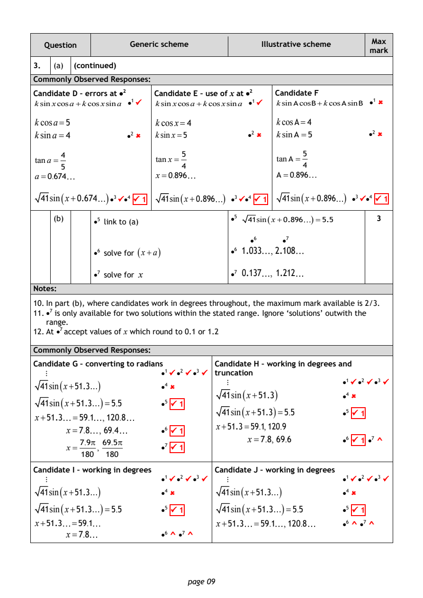
Selectable page text
Max
Question Generic scheme Illustrative scheme
mark
3. (a) (continued)
Commonly Observed Responses:
Candidate D – errors at •² Candidate E – use of x at •² Candidate F
ksinxcosa+kcosxsina •¹ ✓ ksinxcosa+kcosxsina •¹ ✓ ksinAcosB+kcosAsinB •¹
kcosa=5 kcosx=4 kcosA=4
ksina=4 •2 ksinx=5 •2 ksinA =5 •2
4 5 5
tana = tanx= tanA =
5 4 4
a=0.674 x=0.896 A =0.896
41sin(x+0.674 ) •3 ✓•4 ✓ 1 41sin(x+0.896 ) •3 ✓•4 ✓ 1 41sin(x+0.896 ) •3 ✓•4 ✓ 1
(b)
•5 link to (a)
•5 41sin(x+0.896 )=5.5 3
•6 •7
•6 solve for (x+a) •6 1.033 , 2.108
•7 solve for x •7 0.137 , 1.212
Notes:
10. In part (b), where candidates work in degrees throughout, the maximum mark available is 2/3.
11. •⁷ is only available for two solutions within the stated range. Ignore ‘solutions’ outwith the
range.
12. At •⁷ accept values of x which round to 0.1 or 1.2
Commonly Observed Responses:
Candidate G – converting to radians Candidate H – working in degrees and
⋮ •1 ✓ •2 ✓ •3 ✓ truncation
41sin(x+51.3 )
•4
⋮ •1 ✓ •2 ✓ •3 ✓
41sin(x+51.3 )
•4
41sin(x+51.3 )=5.5
•5 ✓ 1
41sin(x+51.3 )=5.5
•5 ✓ 1
x+51.3 =59.1 ,120.8
x=7.8 , 69.4 •6 ✓ 1
x+51.3=59.1,120.9
7.9π 69.5π x=7.8, 69.6 •6 ✓ 1 •⁷ ^
x= , •7 ✓ 1
180 180
Candidate I – working in degrees Candidate J – working in degrees
⋮ •1 ✓ •2 ✓ •3 ✓ ⋮ •1 ✓ •2 ✓ •3 ✓
41sin(x+51.3 )
•4
41sin(x+51.3 )
•4
41sin(x+51.3 )=5.5
•5 ✓ 1
41sin(x+51.3 )=5.5
•5 ✓ 1
x+51.3 =59.1 x+51.3 =59.1 ,120.8 •6 ^ •7 ^
x=7.8 •6 ^ •7 ^
page 09PDF page 10
Paper 2, Question 4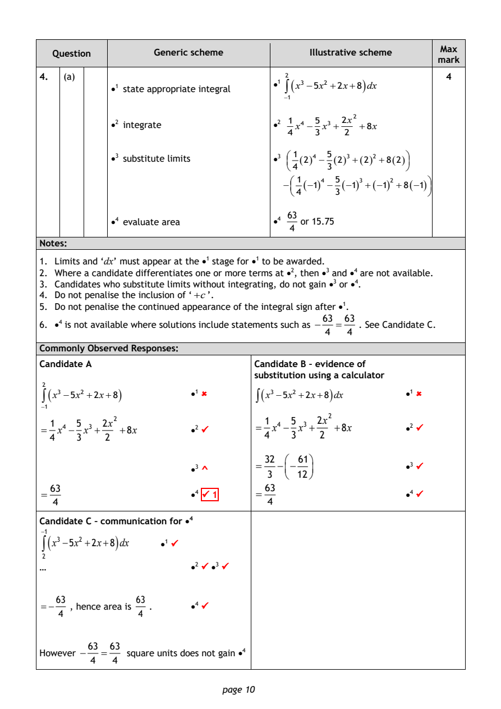
Selectable page text
Max
Question Generic scheme Illustrative scheme
mark
4. (a) 2 4
•1 state appropriate integral
•1 ∫ ( x³ −5x² +2x+8 ) dx
−1
1 5 2x²
•2 integrate •2 x⁴ − x³ + +8x
4 3 2
•3 substitute limits •3 1 (2)⁴ − 5 (2)³ +(2)² +8(2)
4 3
− 1 (−1)⁴ − 5 (−1)³ +(−1)² +8(−1)
4 3
63
•4 evaluate area •4 or 15.75
4
Notes:
1. Limits and ‘dx’ must appear at the •¹ stage for •¹ to be awarded.
2. Where a candidate differentiates one or more terms at •², then •³ and •⁴ are not available.
3. Candidates who substitute limits without integrating, do not gain •³ or •⁴.
4. Do not penalise the inclusion of ‘+c’.
5. Do not penalise the continued appearance of the integral sign after •¹.
63 63
6. •⁴ is not available where solutions include statements such as − = . See Candidate C.
4 4
Commonly Observed Responses:
Candidate A Candidate B – evidence of
substitution using a calculator
2
∫ ( x³ −5x² +2x+8 ) •1 ∫( x³−5x² +2x+8 ) dx •1
−1
1 5 2x² 1 5 2x²
= x⁴ − x³ + +8x •2 ✓ = x⁴ − x³ + +8x •2 ✓
4 3 2 4 3 2
32 61
•3 ^ = − − •3 ✓
3 12
63 63
= •4 ✓ 1 = •4 ✓
4 4
Candidate C – communication for •⁴
−1
( )
∫ x³−5x² +2x+8 dx •1 ✓
2
… •2 ✓ •3 ✓
63 63
=− , hence area is . •4 ✓
4 4
63 63
However − = square units does not gain •⁴
4 4
page 10PDF page 11
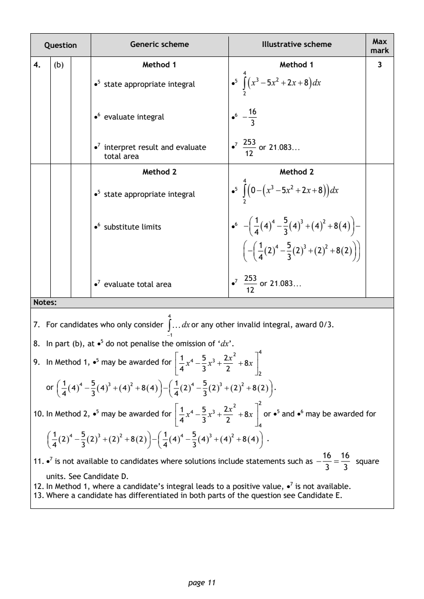
Selectable page text
Max
Question Generic scheme Illustrative scheme
mark
4. (b) Method 1 Method 1 3
4
( )
•5 state appropriate integral •5 ∫ x³ −5x² +2x+8 dx
2
16
•6 evaluate integral •6 −
3
253
•7 interpret result and evaluate •7 or 21.083
12
total area
Method 2 Method 2
4
( ( ))
•5 state appropriate integral
•5 ∫ 0− x³ −5x² +2x+8 dx
2
1 5
•6 substitute limits •6 − (4)⁴ − (4)³ +(4)² +8(4) −
4 3
1 5
− (2)⁴ − (2)³ +(2)² +8(2)
4 3
253
•7 evaluate total area •7 or 21.083
12
Notes:
4
7. For candidates who only consider ∫ dxor any other invalid integral, award 0/3.
−1
8. In part (b), at •⁵ do not penalise the omission of ‘dx’.
4
1 5 2x²
9. In Method 1, •⁵ may be awarded for x⁴ − x³ + +8x
4 3 2
2
1 5 1 5
or (4)⁴ − (4)³ +(4)² +8(4) − (2)⁴ − (2)³ +(2)² +8(2) .
4 3 4 3
2
1 5 2x²
10. In Method 2, •⁵ may be awarded for x⁴ − x³ + +8x or •⁵ and •⁶ may be awarded for
4 3 2
4
1 5 1 5
(2)⁴ − (2)³ +(2)² +8(2) − (4)⁴ − (4)³ +(4)² +8(4) .
4 3 4 3
16 16
11. •⁷ is not available to candidates where solutions include statements such as − = square
3 3
units. See Candidate D.
12. In Method 1, where a candidate’s integral leads to a positive value, •⁷ is not available.
13. Where a candidate has differentiated in both parts of the question see Candidate E.
page 11PDF page 12
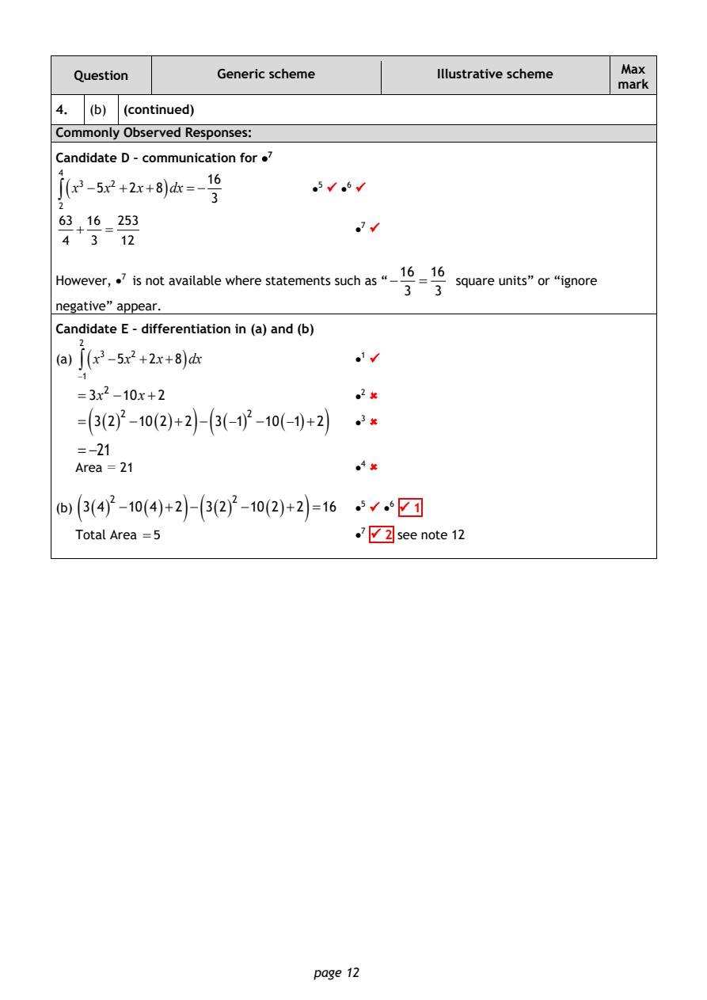
Selectable page text
Max
Question Generic scheme Illustrative scheme
mark
4. (b) (continued)
Commonly Observed Responses:
Candidate D – communication for •⁷
4
16
( )
∫ x³ −5x² +2x+8 dx=− •5 ✓ •6 ✓
3
2
63 16 253
+ = •7 ✓
4 3 12
16 16
However, •⁷ is not available where statements such as “− = square units” or “ignore
3 3
negative” appear.
Candidate E – differentiation in (a) and (b)
2
( )
(a) ∫ x³−5x² +2x+8 dx •1 ✓
−1
=3x² −10x+2 •2
( ) ( )
= 3(2)² −10(2)+2 − 3( −1)² −10( −1)+2 •3
=−21
Area = 21 •4
( ) ( )
(b) 3(4)² −10(4)+2 − 3(2)² −10(2)+2 =16 •5 ✓ •6 ✓ 1
Total Area =5 •7 ✓ 2 see note 12
page 12PDF page 13
Paper 2, Question 5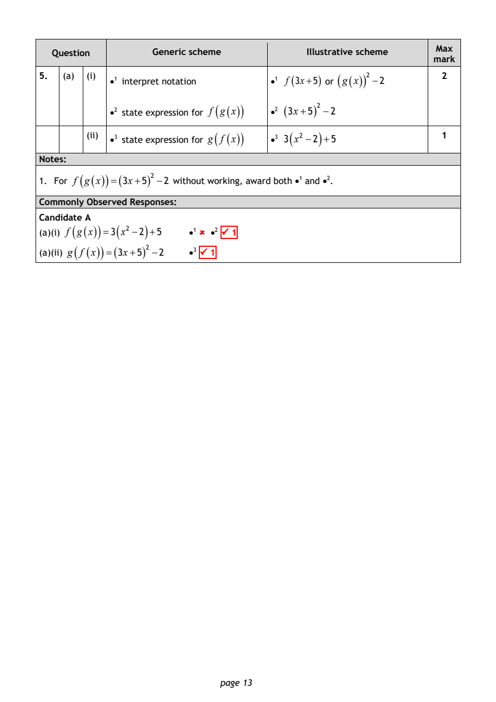
Selectable page text
Max
Question Generic scheme Illustrative scheme
mark
5. (a) (i) •1 interpret notation •1 f (3x+5) or ( g(x)) ² −2 2
•2 state expression for f ( g(x)) •2 (3x+5)² −2
(ii)
•3 state expression for g
(
f
(x))
•3 3
(
x² −2
)
+5
1
Notes:
1. For f ( g(x)) =(3x+5)² −2 without working, award both •¹ and •².
Commonly Observed Responses:
Candidate A
(a)(i) f
( g(x))
=3
(
x² −2
)
+5 •1 •2 ✓ 1
(a)(ii) g ( f (x)) =(3x+5)² −2 •3 ✓ 1
page 13PDF page 14
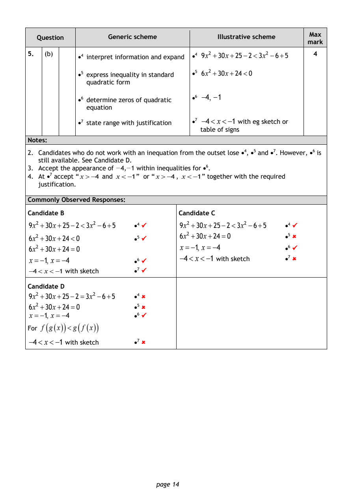
Selectable page text
Max
Question Generic scheme Illustrative scheme
mark
5. (b) •4 interpret information and expand •4 9x² +30x+25−2<3x² −6+5 4
•5 express inequality in standard •5 6x² +30x+24<0
quadratic form
•6 determine zeros of quadratic •6 −4, −1
equation
•7 state range with justification •7 −4< x<−1 with eg sketch or
table of signs
Notes:
2. Candidates who do not work with an inequation from the outset lose •⁴, •5 and •⁷. However, •⁶ is
still available. See Candidate D.
3. Accept the appearance of −4,−1 within inequalities for •⁶.
4. At •⁷ accept “x>−4 and x<−1” or “x>−4, x<−1” together with the required
justification.
Commonly Observed Responses:
Candidate B Candidate C
9x² +30x+25−2<3x² −6+5 •4 ✓ 9x² +30x+25−2<3x² −6+5 •4 ✓
6x² +30x+24<0 •5 ✓ 6x² +30x+24=0 •5
6x² +30x+24=0 x =−1, x =−4 •6 ✓
x =−1, x =−4 •6 ✓ −4< x<−1 with sketch •7
−4< x<−1 with sketch •7 ✓
Candidate D
9x² +30x+25−2=3x² −6+5 •4
6x² +30x+24=0 •5
x =−1, x =−4 •6 ✓
For f
( g(x))
< g
(
f
(x))
−4< x<−1 with sketch •7
page 14PDF page 15
Paper 2, Question 6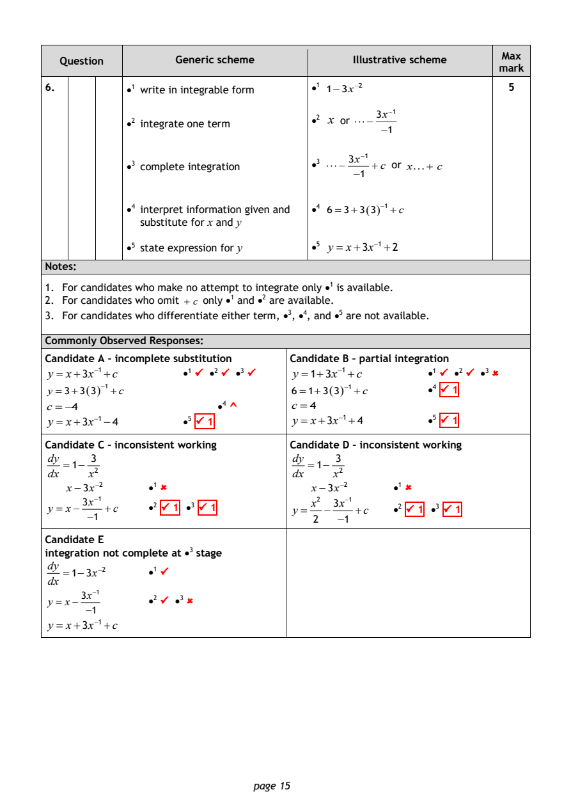
Selectable page text
Max
Question Generic scheme Illustrative scheme
mark
6. •1 write in integrable form •1 1−3x⁻² 5
3x⁻¹
•2 integrate one term •2 x or −
−1
3x⁻¹
•3 complete integration •3 − +c or x + c
−1
•4 interpret information given and •4 6=3+3(3)⁻¹+c
substitute for x and y
•5 state expression for y •5 y = x+3x⁻¹+2
Notes:
1. For candidates who make no attempt to integrate only •¹ is available.
2. For candidates who omit + c only •¹ and •² are available.
3. For candidates who differentiate either term, •³, •4, and •⁵ are not available.
Commonly Observed Responses:
Candidate A – incomplete substitution Candidate B – partial integration
y = x+3x⁻¹+c •1 ✓ •2 ✓ •3 ✓ y =1+3x⁻¹+c •1 ✓ •2 ✓ •3
y =3+3(3)⁻¹+c 6=1+3(3)⁻¹+c •4 ✓ 1
c=−4 •4 ^ c=4
y = x+3x⁻¹−4 •5 ✓ 1 y = x+3x⁻¹+4 •5 ✓ 1
Candidate C – inconsistent working Candidate D – inconsistent working
dy 3 dy 3
=1− =1−
dx x² dx x²
x−3x⁻² •1 x−3x⁻² •1
3x⁻¹ x² 3x⁻¹
y = x− +c •2 ✓ 1 •³ ✓ 1 y= − +c •2 ✓ 1 •³ ✓ 1
−1 2 −1
Candidate E
integration not complete at •³ stage
dy
=1−3x⁻² •1 ✓
dx
3x⁻¹
y = x− •2 ✓ •3
−1
y = x+3x⁻¹+c
page 15PDF page 16
Paper 2, Question 7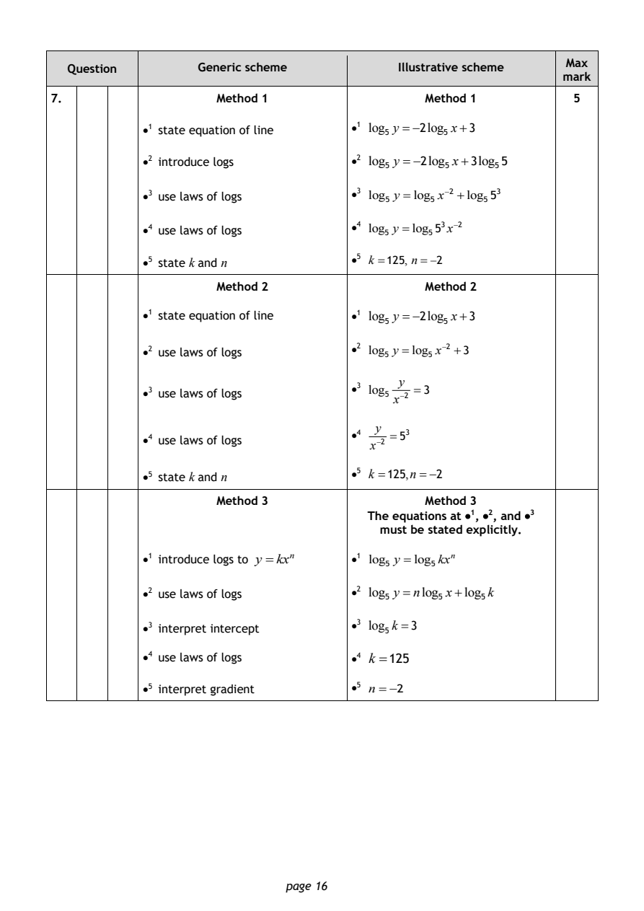
Selectable page text
Max
Question Generic scheme Illustrative scheme
mark
7. Method 1 Method 1 5
•1 state equation of line •1 log₅ y =−2log₅ x+3
•2 introduce logs •2 log₅ y =−2log₅ x+3log₅5
•3 use laws of logs •3 log₅ y =log₅ x⁻² +log₅5³
•4 use laws of logs •4 log₅ y =log₅5³x⁻²
•5 state k and n •5 k =125, n=−2
Method 2 Method 2
•1 state equation of line •1 log₅ y =−2log₅ x+3
•2 use laws of logs •2 log₅ y =log₅x⁻² +3
y
•3 use laws of logs •3 log₅ =3
x⁻²
y
•4 use laws of logs
•4 =5³
x⁻²
•5 state k and n •5 k =125,n=−2
Method 3 Method 3
The equations at •¹, •2, and •³
must be stated explicitly.
•1 introduce logs to y =kxⁿ •1 log₅ y =log₅kxⁿ
•2 use laws of logs •2 log₅ y =nlog₅ x+log₅k
•3 interpret intercept •3 log₅k =3
•4 use laws of logs •4 k =125
•5 interpret gradient •5 n=−2
page 16PDF page 17
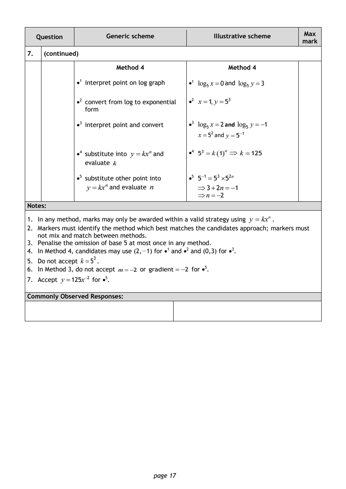
Selectable page text
Max
Question Generic scheme Illustrative scheme
mark
7. (continued)
Method 4 Method 4
•1 interpret point on log graph •1 log₅x=0and log₅ y =3
•2 convert from log to exponential •2 x=1,y =5³
form
•3 interpret point and convert •3 log₅x=2and log₅ y =−1
x=5²and y =5⁻¹
•4 substitute into y =kxⁿand •4 5³ = k(1)ⁿ ⇒ k =125
evaluate k
•5 substitute other point into •5 5⁻¹=5³×5²ⁿ
y =kxⁿand evaluate n ⇒3+2n=−1
⇒n=−2
Notes:
1. In any method, marks may only be awarded within a valid strategy using y = kxⁿ.
2. Markers must identify the method which best matches the candidates approach; markers must
not mix and match between methods.
3. Penalise the omission of base 5 at most once in any method.
4. In Method 4, candidates may use (2,−1) for •¹ and •² and (0,3) for •³.
5. Do not accept k =5³.
6. In Method 3, do not accept m=−2 or gradient=−2 for •⁵.
7. Accept y =125x⁻² for •⁵.
Commonly Observed Responses:
page 17PDF page 18
Paper 2, Question 8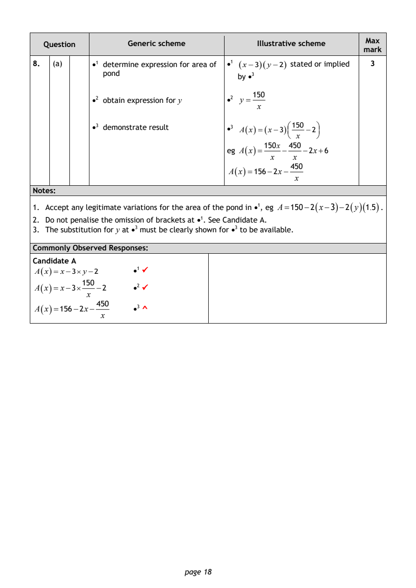
Selectable page text
Max
Question Generic scheme Illustrative scheme
mark
8. (a) •1 determine expression for area of •1 (x−3)(y−2) stated or implied 3
pond
by •³
150
•2 obtain expression for y •2 y =
x
•3 demonstrate result •3 A(x)=(x−3) 150 −2
x
150x 450
eg A(x)= − −2x+6
x x
450
A(x)=156−2x−
x
Notes:
1. Accept any legitimate variations for the area of the pond in •¹, eg
A=150−2(x−3)−2(y)(1.5)
.
2. Do not penalise the omission of brackets at •¹. See Candidate A.
3. The substitution for y at •³ must be clearly shown for •³ to be available.
Commonly Observed Responses:
Candidate A
A(x)= x−3×y−2 •1 ✓
150
A(x)= x−3× −2 •2 ✓
x
450
A(x)=156−2x− •3 ^
x
page 18PDF page 19
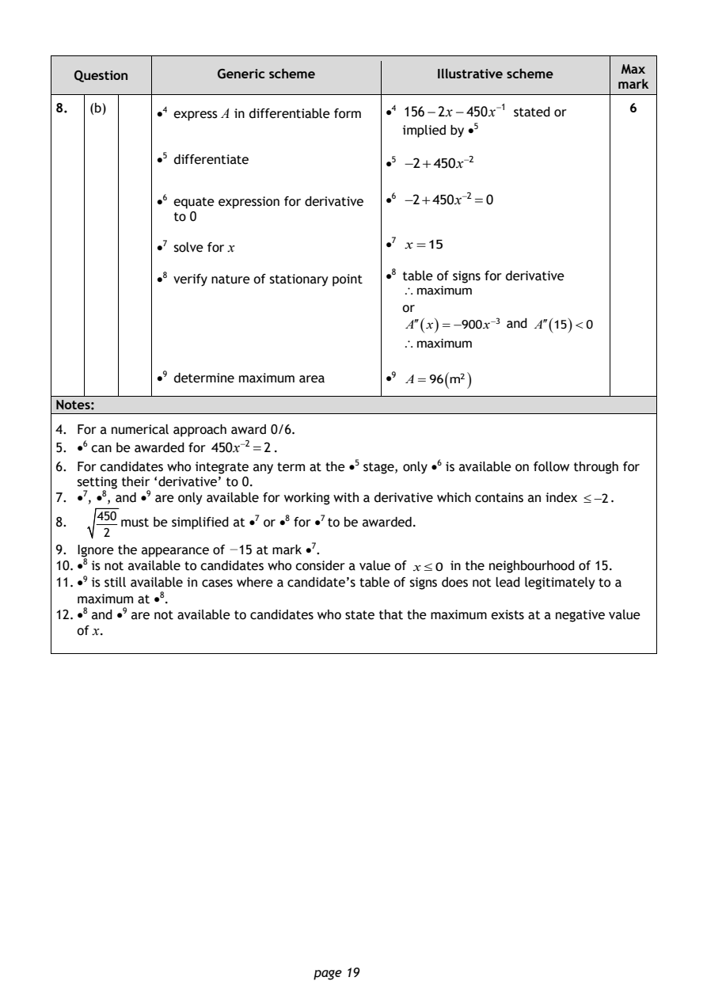
Selectable page text
Max
Question Generic scheme Illustrative scheme
mark
8. (b) •4 express A in differentiable form •4 156−2x−450x⁻¹ stated or 6
implied by •⁵
•5 differentiate •5 −2+450x⁻²
•6 equate expression for derivative •6 −2+450x⁻²=0
to 0
•7 solve for x •7 x =15
•8 verify nature of stationary point •8 table of signs for derivative
∴maximum
or
A′′(x)=−900x⁻³ and A′′(15)<0
∴maximum
•9 determine maximum area •9 A=96 ( m² )
Notes:
4. For a numerical approach award 0/6.
5. •⁶ can be awarded for 450x⁻²=2.
6. For candidates who integrate any term at the •⁵ stage, only •⁶ is available on follow through for
setting their ‘derivative’ to 0.
7. •⁷, •8, and •⁹ are only available for working with a derivative which contains an index ≤−2.
450
8. must be simplified at •⁷ or •⁸ for •⁷ to be awarded.
2
9. Ignore the appearance of −15 at mark •⁷.
10. •⁸ is not available to candidates who consider a value of x≤0 in the neighbourhood of 15.
11. •⁹ is still available in cases where a candidate’s table of signs does not lead legitimately to a
maximum at •⁸.
12. •⁸ and •⁹ are not available to candidates who state that the maximum exists at a negative value
of x.
page 19PDF page 20
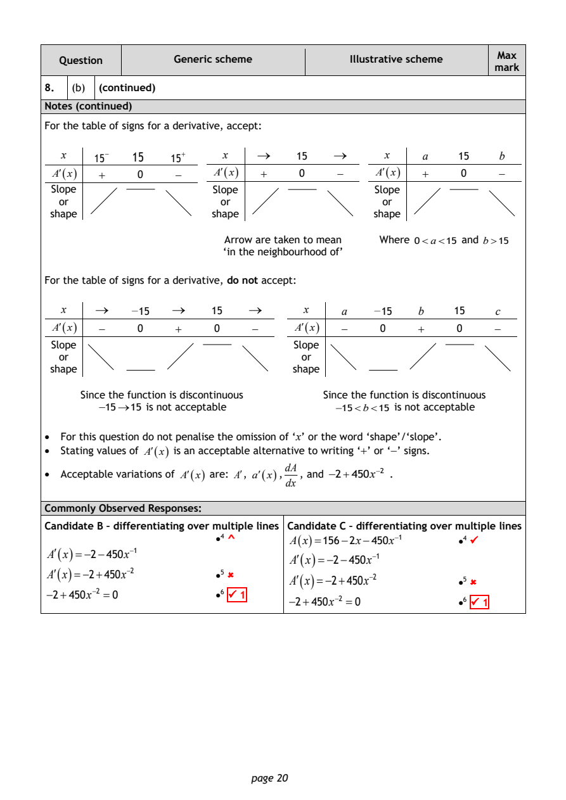
Selectable page text
Max
Question Generic scheme Illustrative scheme
mark
8. (b) (continued)
Notes (continued)
For the table of signs for a derivative, accept:
x 15⁻ 15 15⁺ x → 15 → x a 15 b
A′(x) + 0 − A′(x) + 0 − A′(x) + 0 −
Slope Slope Slope
or or or
shape shape shape
Arrow are taken to mean Where 0<a<15 and b>15
‘in the neighbourhood of’
For the table of signs for a derivative, do not accept:
x → −15 → 15 → x a −15 b 15 c
A′(x) − 0 + 0 − A′(x) − 0 + 0 −
Slope Slope
or or
shape shape
Since the function is discontinuous Since the function is discontinuous
−15→15 is not acceptable −15<b<15 is not acceptable
• For this question do not penalise the omission of ‘x’ or the word ‘shape’/‘slope’.
• Stating values of A′(x) is an acceptable alternative to writing ‘+’ or ‘−’ signs.
dA
• Acceptable variations of A′(x) are: A′, a′(x), , and −2+450x⁻² .
dx
Commonly Observed Responses:
Candidate B – differentiating over multiple lines Candidate C – differentiating over multiple lines
•4 ^ A(x)=156−2x−450x⁻¹ •4 ✓
A′(x)=−2−450x⁻¹
A′(x)=−2−450x⁻¹
A′(x)=−2+450x⁻²
•5 A′(x)=−2+450x⁻²
•5
−2+450x⁻² =0 •6 ✓ 1
−2+450x⁻² =0 •6 ✓ 1
page 20PDF page 21
Paper 2, Question 9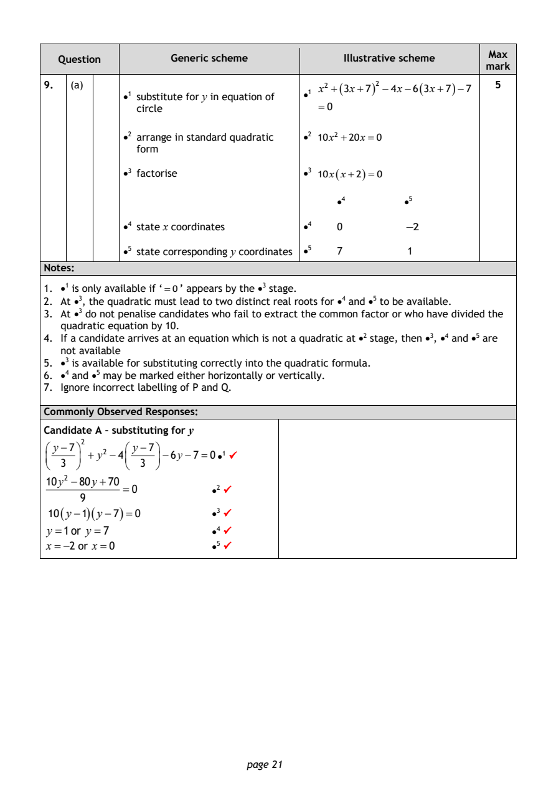
Selectable page text
Max
Question Generic scheme Illustrative scheme
mark
9. (a) x² +(3x+7)² −4x−6(3x+7)−7 5
•1 substitute for y in equation of •1
circle =0
•2 arrange in standard quadratic •2 10x² +20x =0
form
•3 factorise •3 10x(x+2)=0
•4 •5
•4 state x coordinates •4 0 −2
•5 state corresponding y coordinates •⁵ 7 1
Notes:
1. •¹ is only available if ‘=0’ appears by the •³ stage.
2. At •³, the quadratic must lead to two distinct real roots for •⁴ and •⁵ to be available.
3. At •³ do not penalise candidates who fail to extract the common factor or who have divided the
quadratic equation by 10.
4. If a candidate arrives at an equation which is not a quadratic at •² stage, then •³, •4 and •⁵ are
not available
5. •³ is available for substituting correctly into the quadratic formula.
6. •⁴ and •⁵ may be marked either horizontally or vertically.
7. Ignore incorrect labelling of P and Q.
Commonly Observed Responses:
Candidate A – substituting for y
y−7² y−7
+ y² −4 −6y−7=0•¹ ✓
3 3
10y² −80y+70
=0 •2 ✓
9
10(y−1)(y−7)=0 •3 ✓
y =1or y =7 •4 ✓
x =−2 or x =0 •5 ✓
page 21PDF page 22
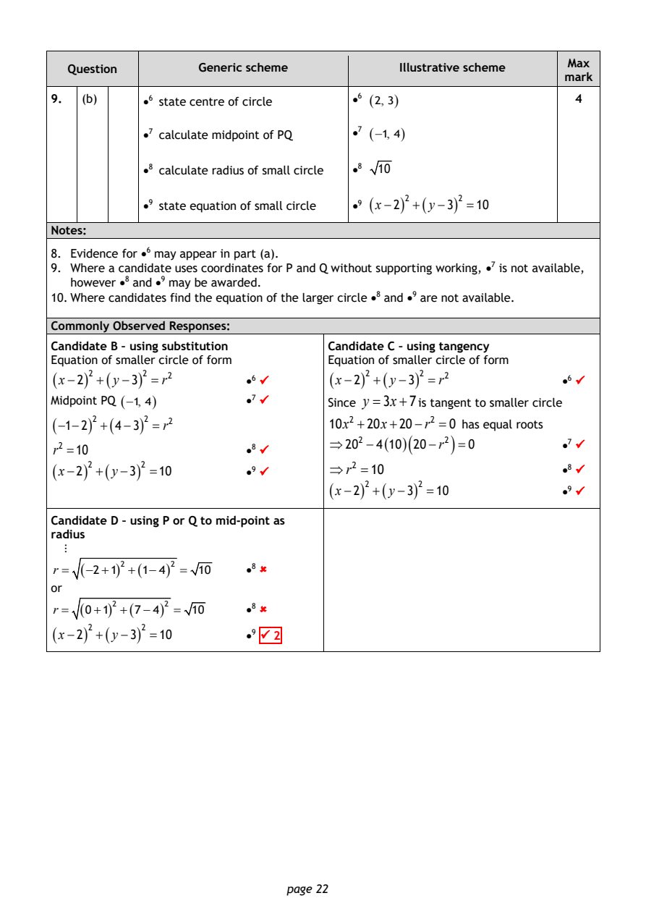
Selectable page text
Max
Question Generic scheme Illustrative scheme
mark
9. (b) •6 state centre of circle •6 (2, 3) 4
•7 calculate midpoint of PQ •7 (−1, 4)
•8 calculate radius of small circle •8 10
•9 state equation of small circle •9 (x−2)² +(y−3)² =10
Notes:
8. Evidence for •⁶ may appear in part (a).
9. Where a candidate uses coordinates for P and Q without supporting working, •⁷ is not available,
however •⁸ and •⁹ may be awarded.
10. Where candidates find the equation of the larger circle •⁸ and •⁹ are not available.
Commonly Observed Responses:
Candidate B – using substitution Candidate C – using tangency
Equation of smaller circle of form Equation of smaller circle of form
(x−2)² +(y−3)² = r² •6 ✓ (x−2)² +(y−3)² = r² •6 ✓
Midpoint PQ (−1, 4) •7 ✓ Since y =3x+7is tangent to smaller circle
(−1−2)² +(4−3)² = r² 10x² +20x+20−r² =0 has equal roots
r² =10 •8 ✓ ⇒20²
−4(10)(
20−r²
)
=0 •7 ✓
(x−2)² +(y−3)² =10 •9 ✓ ⇒r² =10 •8 ✓
(x−2)² +(y−3)² =10 •9 ✓
Candidate D – using P or Q to mid-point as
radius
⋮
r = (−2+1)² +(1−4)² = 10 •8
or
r = (0+1)² +(7−4)² = 10 •8
(x−2)² +(y−3)² =10 •9 ✓ 2
page 22PDF page 23
Paper 2, Question 10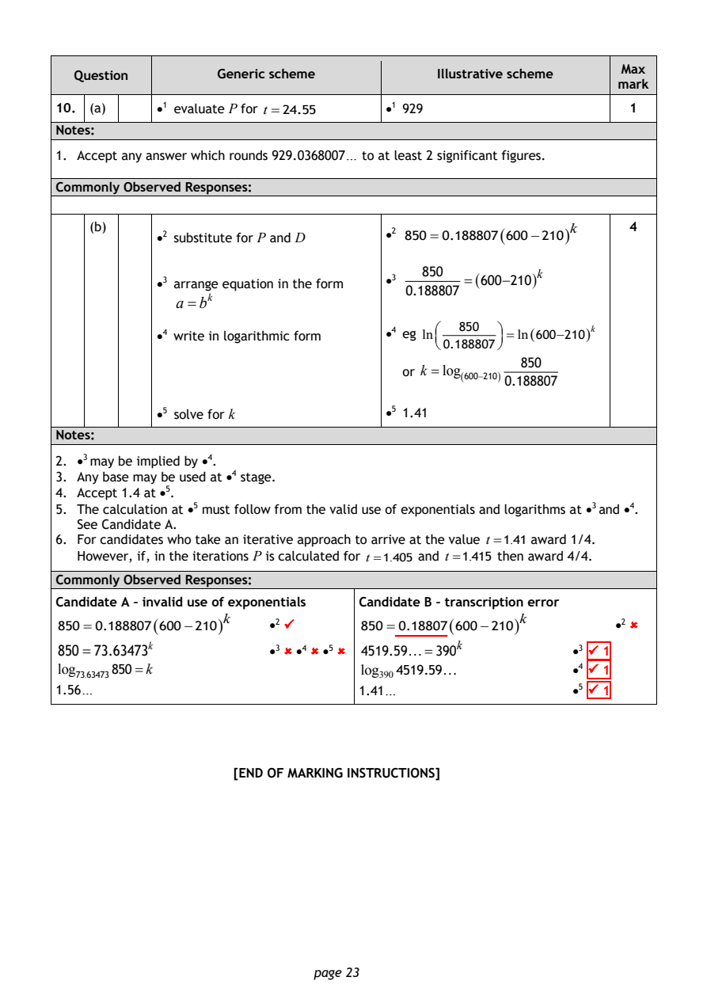
Selectable page text
Max
Question Generic scheme Illustrative scheme
mark
10. (a) •1 evaluate P for t =24.55 •1 929 1
Notes:
1. Accept any answer which rounds 929.0368007… to at least 2 significant figures.
Commonly Observed Responses:
(b) k 4
•2 substitute for P and D •2 850 =0.188807(600−210)
850 k
•3 arrange equation in the form •3 =(600−210)
0.188807
a =b^{k}
•4 write in logarithmic form •4 eg ln 850 =ln(600−210)^{k}
0.188807
850
or k =log₍₆₀₀₋₂
10)
0.188807
•5 solve for k •5 1.41
Notes:
2. •³ may be implied by •⁴.
3. Any base may be used at •⁴ stage.
4. Accept 1.4 at •⁵.
5. The calculation at •⁵ must follow from the valid use of exponentials and logarithms at •³ and •⁴.
See Candidate A.
6. For candidates who take an iterative approach to arrive at the value t =1.41 award 1/4.
However, if, in the iterations P is calculated for t =1.405 and t =1.415 then award 4/4.
Commonly Observed Responses:
Candidate A – invalid use of exponentials Candidate B – transcription error
k k
850 =0.188807(600−210) •2 ✓ 850 =0.18807(600−210) •2
850 =73.63473^{k} •3 •4 •5 4519.59 =390 k •3 ✓ 1
log₇₃_{.}₆₃₄ 850=k log₃₉₀4519.59 •4 ✓ 1
73
1.56… 1.41… •5 ✓ 1
[END OF MARKING INSTRUCTIONS]
page 23